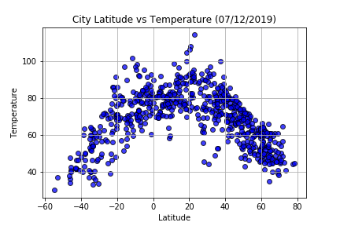
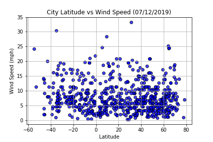
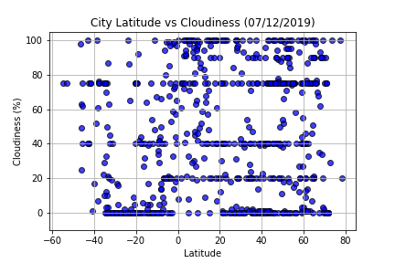
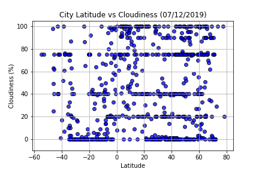

Summary: Latitude vs. X
The purpose of this project was to analyze how weather changes as you get closer to the equator. To accomplish this analysis, we first pulled data from the OpenWeather API to assemble a dataset on over 500 cities. After assembling the dataset, we used Matplolib to plot various aspects of the weather vs. latitude. Factors we looked at included: temperature, cloudiness, wind speed and humidity. This site provide the source data and visualizations created as part of the analysis, as well as explations and descriptions of any trends and corrections witnessed.
Visualizations
 
